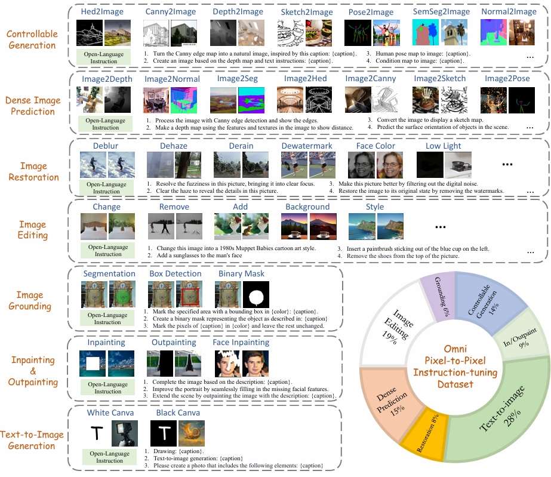
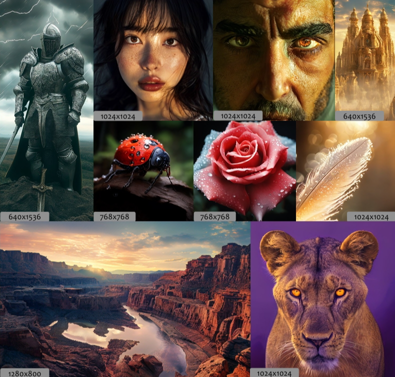
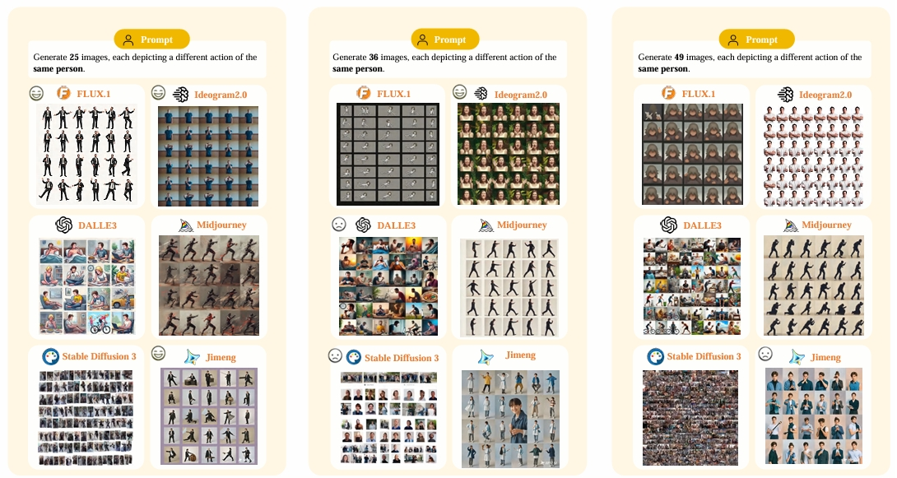
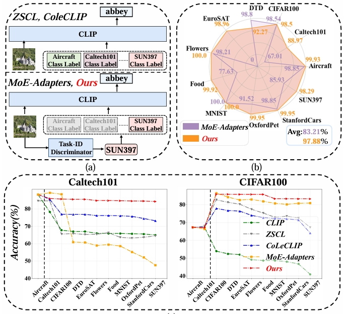

|
Application: I am currently in the process of applying for a PhD program in Artificial Intelligence for 2025fall. If you are also applying or are interested in talking about research, please do not hesitate to contact me! I am more than happy to connect and share insights.
|
Research
My Long-Term Research Interests include:
- Multi-modality Generative Models: Modeling multi-modal content in the generative way, under various paradigms, e.g., autoregressive model, diffusion model, etc.
Lumina-mGPT, SPHINX-X
- Inferece Time Scaling Law: More computation in the inference time results in higher intellectual level of the AI system.
Causal-CoG, Likelihood Composition
- Compositionality: Decomposing the images or unstructured text to help reasoning and planning.
|
News
- [Sept. 2024] Likelihood Composition is accepted by EMNLP 2024 as findings.
- [May 2024] Give a talk of Causal-CoG at CCVL@JHU's group meeting.
- [April 2024] Causal-CoG is accepted by CVPR 2024 as Poster (Highlight, top 2.8%).
- [Dec. 2023] Join Shanghai AI Lab as a research intern.
Last updated: 2024/9/26.
|
|

|
PixWizard: Versatile Image-to-Image Visual Assistant with Open-Language Instructions
Weifeng Lin*,
Xinyu Wei*,
Renrui Zhang*,
Le Zhuo,
Shitian Zhao,
Siyuan Huang,
Junlin Xie,
Yu Qiao,
Peng Gao,
Hongsheng Li
ICLR, 2025
arXiv /
code
|

|
Causal-CoG: A Causal-Effect Look at Context Generation for Boosting Multi-modal Language Models
Shitian Zhao,
Zhuowan Li,
Yadong Lu,
Alan Yuille,
Yan Wang
CVPR (Poster Highlight, top 2.8%), 2024
arXiv /
code
|
|

|
Lumina-mGPT: Illuminate Flexible Photorealistic Text-to-Image Generation with Multimodal Generative Pretraining
Dongyang Liu*,
Shitian Zhao*,
Le Zhuo*,
Weifeng Lin*,
Hongsheng Li,
Yu Qiao,
Peng Gao*
Preprint
arXiv /
code
|

|
SPHINX-X: Scaling Data and Parameters for a Family of Multi-modal Large Language Models
Dongyang Liu*,
Longtian Qiu*,
Siyuan Huang*,
Weifeng Lin*,
Shitian Zhao,
Shijie Geng,
Ziyi Lin,
Peng Jin,
Kaipeng Zhang,
Wenqi Shao,
Chao Xu,
Conghui He,
Junjun He,
Hao Shao,
Pan Lu,
Hongsheng Li,
Yu Qiao,
Peng Gao*
ICML, 2024
arXiv /
code
|

|
Unleashing the Potentials of Likelihood Composition for Multi-modal Language Models
Shitian Zhao,
Renrui Zhang,
Xu Luo,
Yan Wang,
Shanghang Zhang,
Peng Gao
EMNLP Findings, 2024
arXiv /
code
|
|

|
IMAGINE-E: Image Generation Intelligence Evaluation of State-of-the-art Text-to-Image Models
Jiayi Lei*,
Renrui Zhang*,
Xiangfei Hu,
Weifeng Lin,
Zhen Li,
Wenjian Sun,
Ruoyi Du,
Le Zhuo,
Zhongyu Li,
Xinyue Li,
Shitian Zhao,
Ziyu Guo,
Yiting Lu,
Peng Gao,
Hongsheng Li
Preprint, 2024
arXiv
|
|

|
Boosting Open-Domain Continual Learning via Leveraging Intra-domain Category-aware Prototype
Yadong Lu,
Shitian Zhao,
Boxiang Yun,
Dongsheng Jiang,
Yin Li,
Qingli Li,
Yan Wang
Preprint, 2024
arXiv
|
Professional Service
- Reviewer at NeurIPS2024, CVPR2025.
|
Honors & Awards
- Outstanding Graduate Thesis @ ECNU
- Excellent Student Scholarship (the first year in my undergraduate journey)
- The Third Prize, Province Level, China Undergraduate Mathematical Contest in Modeling
|
Misc
- I used to be an actor @ Yang Zhi Shui Chinese Drama Club, ECNU. Our drama, "Online Tragedy" (《线上悲剧》), won the Best Online Creative Award at The 18th Shanghai College Students Drama Festival. In the play, my role is the male lead, Andrei (安德烈), a Russian revolutionary youth.
- During the summer of 2021, I joined the ecology research team from ECNU on multiple field investigations to Zhoushan Island in Zhejiang Province, primarily focusing on studying the distribution of local anteater populations. Finally, this research is published as a paper.
|
|